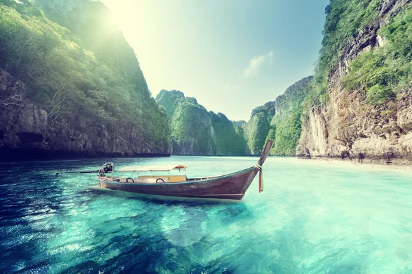

A Dive into Peace: The Magic of the Lake
Days like these remind me how important it is to stop and breathe. The sound of the water, the reflection of the mountains, the absolute peace. Lake Louise, nestled within Canada’s Banff National Park, is often called the "Jewel of the Rockies." Its stunning beauty comes from the vivid turquoise waters, colored by fine rock sediment—or "rock flour"—carried by glacial meltwater. The lake is dramatically framed by towering peaks, with the majestic Victoria Glacier visible at its far end. Visitors can rent iconic bright red canoes to paddle across the serene surface in summer, or enjoy the frozen winter wonderland when the lake becomes a natural ice skating rink. Lake Louise is the quintessential alpine landscape, offering breathtaking views, world-class hiking trails, and a perfect reflection of wild, untouched nature.
Torna a gli articoli